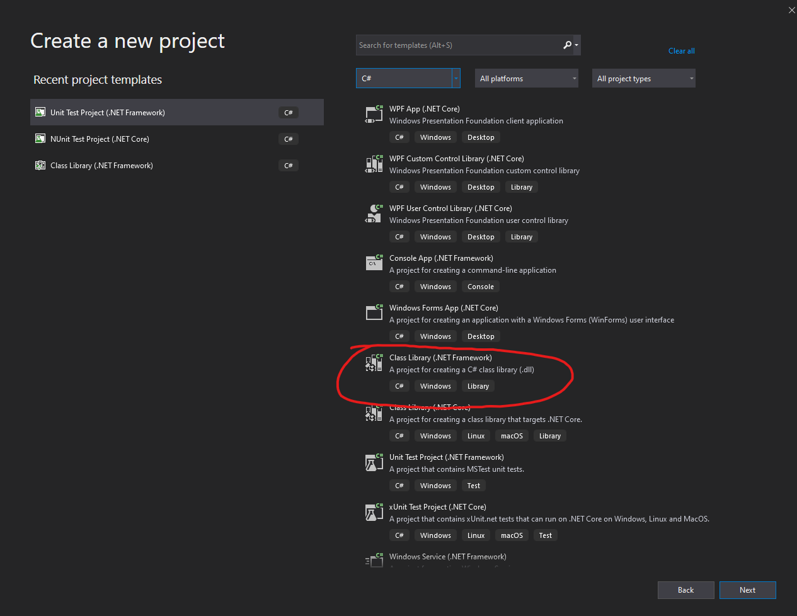
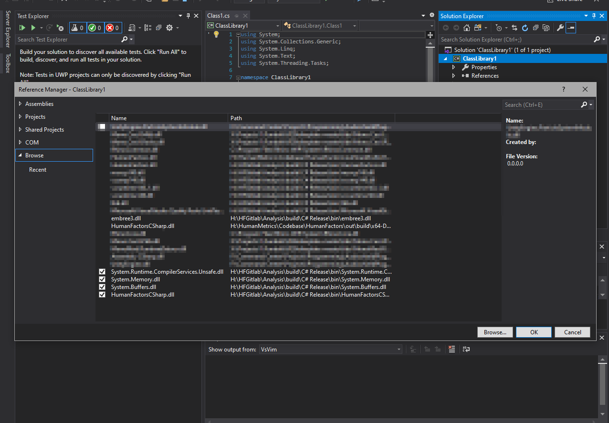
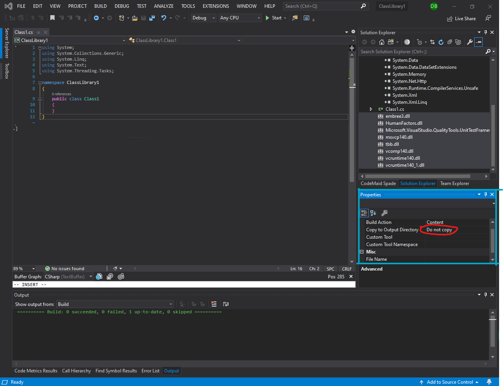
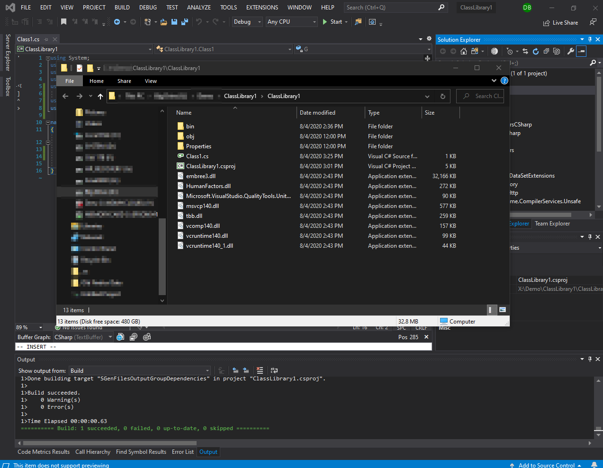

Table of Contents
Intro
In this tutorial we will cover the process of creating a new Visual Studio project that references the HumanFactors C# interface. We will also walk through the steps of adding non-C# dependencies such as HumanFactors.dll to your project, as this is required for the produced program to run at all. After this tutorial is completed you should have a project that is able to reference HumanFactors' C# interface and automatically copy it and its dependencies to the output folder when the project is built.
Prerequisites
Ensure that you have the following prerequisites before continuing.
- The latest copy of the C# Human Factors Release
- A copy of Visual Studio. Version should not matter, but for this tutorial I will be using VisualStudio 2019
- The necessary prerequisites for developing C# projects in Visual Studio.
Creating the project

Figure 1.1: Visual studio splash screen. Circled: Create a new project button
First, Open Visual Studio. You should be greeted by the splash screen shown in Figure 1.1 or a similar screen if you're using a different version of Visual Studio. Click on the button titled Create a New Project to create a new project.

Figure 1.2: Create A New Project Menu
Upon clicking Create A New Project you should see the create a new project dialog line in . Note that the menu options shown here may be different than yours depending on what Visual Studio extensions you have installed. We want to create a new C# Library, so we want to filter these options to only include options for C#. Click on the All Languages drop down, then select C# as shown in Figure 1.2.

Figure 1.3: Create a .NET Class Library
Once you've clicked C# the menu should be filtered to only contain C# project types. Just as before, your list may not exactly match the one shown here depending on the Visual Studio extensions you have installed. The one we're looking for is the Class Library (.Net Framework) circled in Figure 1.3. If you do not see this option, scroll up or down to find it. Click Class Library (.Net Framework) to create the project.
NOTE: The processes described in this tutorial, will also work with other types of projects such as command line projects, or other executables. Feel free to use one of these other types of projects instead for this tutorial.

Figure 1.4: ConFigure Dialog
In the conFigure dialog, you're able to change the name, location and framework version of your assembly. For this demonstration we'll be using the version of the .net framework that HumanFactorsCSharp was built with, Framework version 4.5. Change the framework version to 4.5 by using the dropdown menu circled in cyan in Figure 1.4. We'll be leaving the rest of the options as their defaults for this example, but feel free to change the name and location of the project. Once you're ready, click the Create button circled in red at the bottom right corner of the dialog to create the project.

Figure 1.5: Blank Project
After pressing create, Visual Studio display a window for your new blank project. Now we're ready to move on to adding the DLL.
Adding A Reference To Human Factors
Before we move on to writing the example program, we must first add HumanFactors C# DLL as a reference.

Figure 2.1: Menu to add a reference
In the Solution Explorer on the right hand side of the window, right click on the item with the name of your current solution, hover over the Add option, then click Reference as shown in Figure 2.1.

Figure 2.2: Add Reference Dialog
A new window should open similar to the one shown in Figure 2.2, however the contents of the window will differ depending on what other C# projects you have previously built with Visual Studio, or DLLs you've previously added references to in the past. Click the Browse button circled in red in Figure 2.2 at the bottom right corner of the dialog. This should open a file explorer window.

Figure 2.3: Human Factors Bin Folder
In the file explorer, navigate to the bin directory in which you've installed Human Factors. Select all the files in the bin directory, then click the add button at the bottom right of the window to add them to the menu.

Figure 2.4: References added to the solution, indicated by a checkbox
If you completed the last step successfully, then you should be able to see all of the added DLLS checked off in the Reference Manager like in Figure 2.4. From this list, only some of the items are C# DLLs, so only leave the deselect every one of the references except for HumanFactorsCSharp.dll, System.Memory.dll, System.Runtime.CompilerServices.Unsafe.dll, and System.Buffers.dll.

Figure 2.5: Only required references checked off
Once you've unchecked the unneeded references, you can finish the process of add these references to the project by clicking the add button at the bottom right of the reference manager window. This will close the window and bring you back to your blank project.

Figure 2.6: References Tab Circled
For additional verification that this worked, click the dropdown arrow in the solution explorer next to References, circled in red in Figure 2.6.

Figure 2.7: New References in dropdown.
Upon clicking this drop down, all of the references to this project will be displayed. In this list you should be able to see the references we added earlier. These references are highlighted in Figure 2.7. If you can see these references in the list, then you have completed this step correctly, and are ready to move onto the next step of this tutorial.
Adding Native Dependencies
We added the C# components of human factors to the project as libraries, however we also need to ensure that those DLLs that we unchecked are part of our project as well. While these libraries can't be loaded as dependencies like C# libraries can, they can still be managed by our project, and most importantly copied to the correct directories when the project is built. If the native libraries are not placed alongside the C# library, then HumanFactors will not run once the project is built.

Figure 3.1: Add Existing Item in Dropdown
To add a file to your project, right click on the project in the solution explorer window, then hover over add and click Existing Item as shown in Figure 3.1.
Upon clicking on the Add existing item option another file explorer window will open. Navigate back to the bin directory of humanfactors.

Figure 3.2: Circled: All Files option
Upon reaching the folder you may notice the folder is now empty. like in Figure 3.2 This is because by default, Visual Studio only displays visual C# files in this dialog. To see other file types, you must click the drop down at the bottom right of the window above the Add button and select All Files (*.*) circled in red.

Figure 3.3: Highlighted: Native DLLs to add to the project
This should disable the default filetype filter and allow you to see the DLLS like in Figure 3.3. Highlight all of the native DLLS that we didn't leave checked off in the previous section. These are highlighted in Figure 3.2. Once these are selected, press the Add button at the bottom right of the window to add them to the project.

Figure 3.4: Highlighted: Native DLLS
After the file explorer closes, go to the solution explorer and scroll down until you see the newly added DLLS highlighted in Figure 3.4.
Figure 3.5: Highlighted: Native DLLS in the project
Select all of these DLLS and right click on them then click Properties circled in red in Figure 3.5. This may not have an immediately visible effect, like in the case of my Visual Studio configuration here. If you, like me, have the properties pane, resize it by dragging it's border upwards. The position of this pane will differ between versions of Visual Studio and personal preferences.

Figure 3.6: Properties Pane
Once the properties pane is visible (outlined in cyan in Figure 3.6) click on the item that says Do not copy, circled in red in the properties window.

Figure 3.7: Changing Do Not Copy to Copy If Newer
Once you click on Do Not Copy you should see a drop down appear to the right. Click on the downward arrow to expand it then select Copy If Newer like in Figure 3.7. Upon clicking this the option should also change to Copy if Newer. Now upon building the program, these files should be copied to the output directory alongside your library and all of the C# references.
Testing the output
With everything set up correctly, we should now be able to demonstrate that this process works. The goal is to ensure Visual Studio can see the referenced C# code, and that it copies all of the dependencies to the output directory once the project is built.
under the line using System.Threading.Tasks enter the following using declarations.
Then in the body of the default class Class 1 Enter the following line.

Figure 4.1: Added Example Code
Once you've done this your code should look like Figure 4.1

Figure 4.2: Building the project
After verifying that your code matches Figure 4.1, In the top bar of Visual Studio click Build and then click Build Solution. This will compile the C# code we have written into a DLL and put it in the output directory alongside all of the required dependencies. We will now navigate to the output folder to ensure this is true.

Figure 4.3 : Open in file explorer
Right click on your project in the solution explorer, and click open in File Explorer.

Figure 4.4 : Solution in file explorer
This should open an instance of the file explorer at the root of your project like in Figure 4.4. From here, navigate into the bin then Debug folders.

Figure 4.5 : Contents of the Debug Folder
Once there, you should be looking at the output of your program. Verify that all of the C# and non-C# DLLs that we've added have been copied over successfully. If your folder's contents match that of Figure 4.5 then you've successfully completed this tutorial.